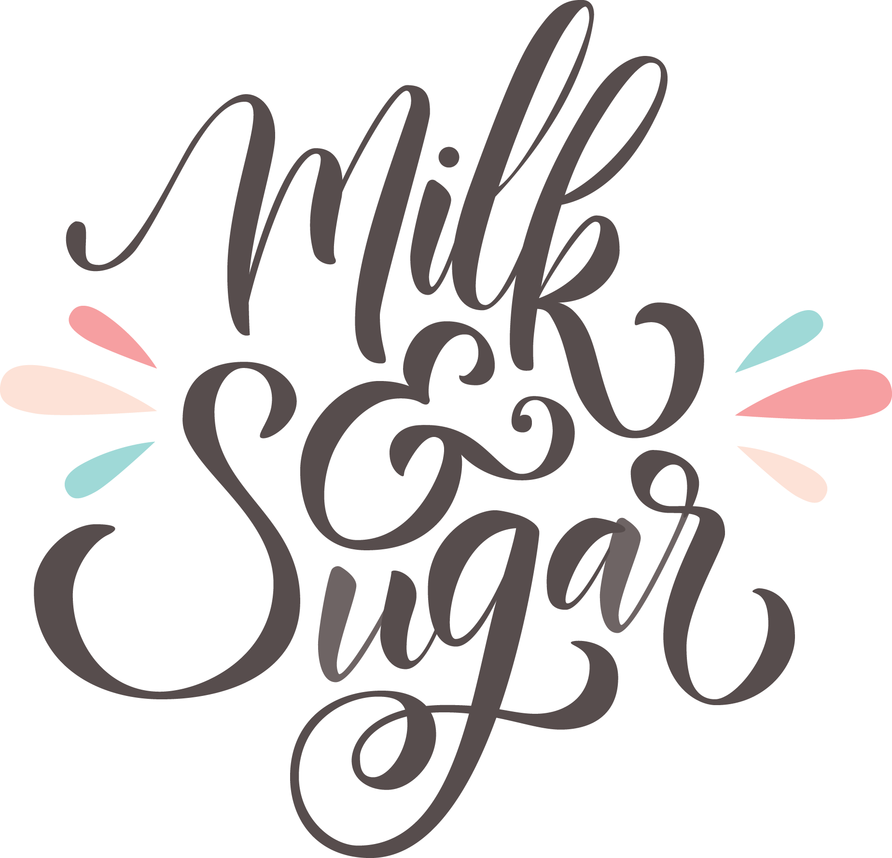

IN THE NAME OF MILK.
IN THE NAME OF SUGAR.
IN THE NAME OF CRAFT AND PASSION.
ABOUT
Milk & Sugar is home-based bakery in San Jose with the mission of delivering sweet happiness to Leland high School.
Tiffany Xiang founded the bakery in 2016 to pursue her passion in baking.
25% of the bakery's profits are donated to El Camino Hospital Los Gatos.
Contact: tiffanykelli16@gmail.com